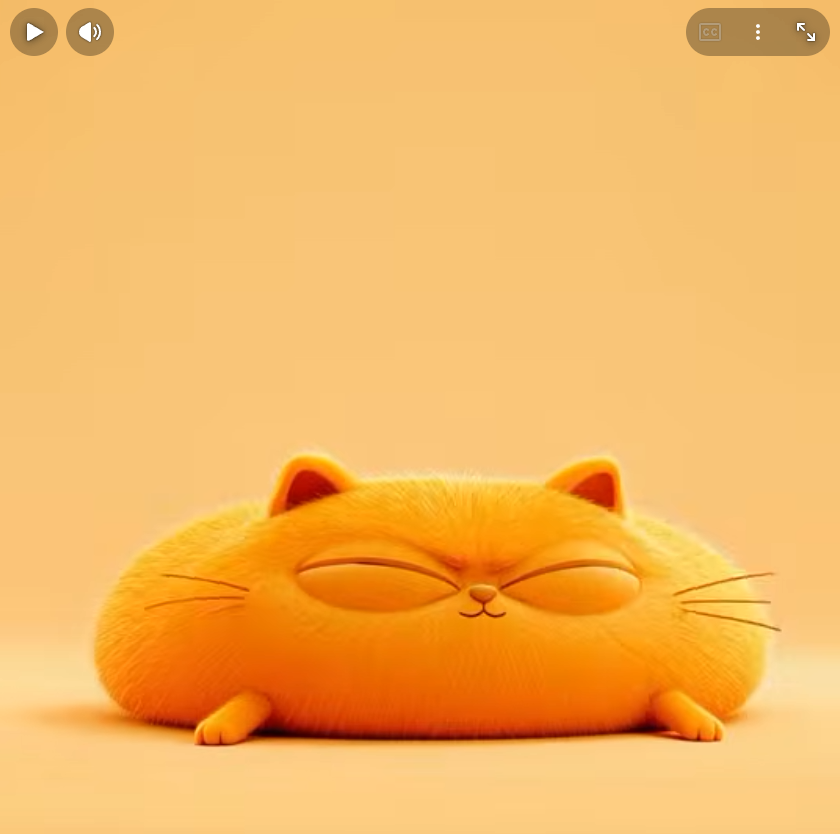
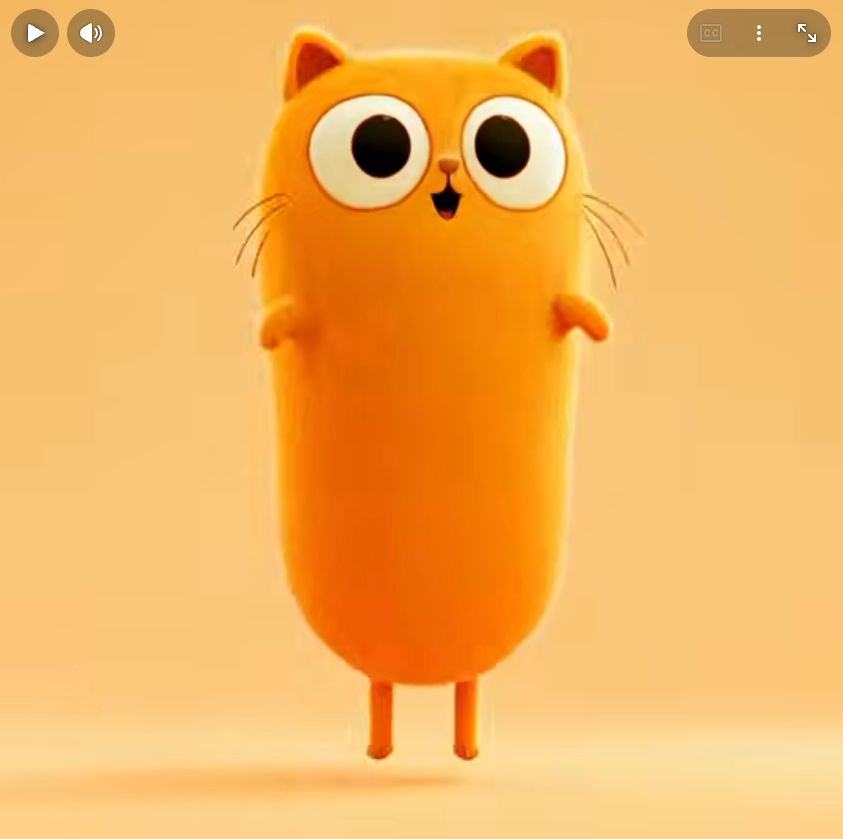
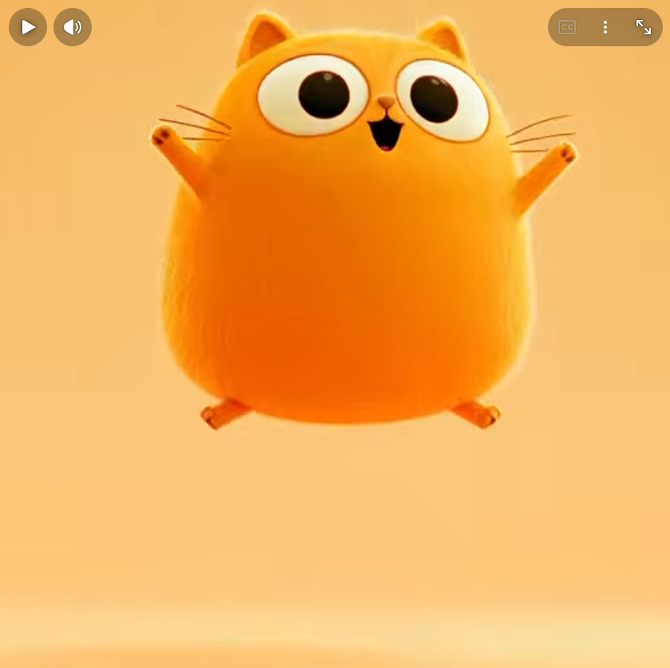
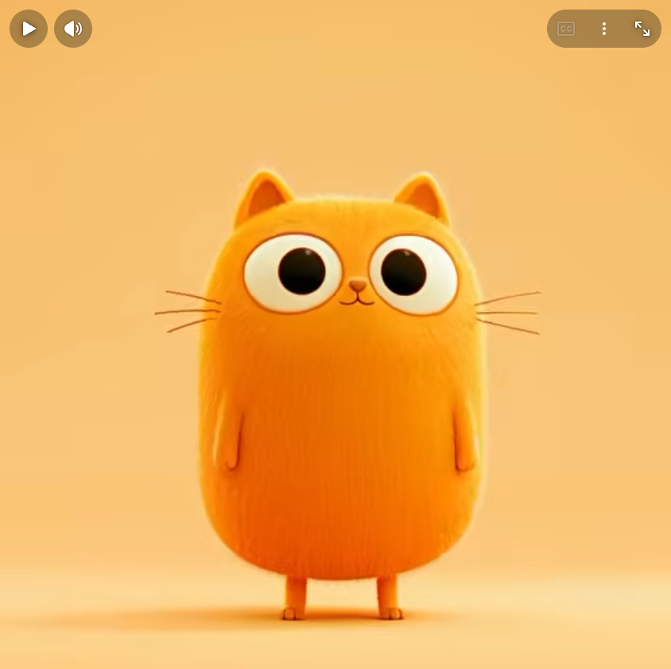

動態的彈性與劇力
擠壓伸展與誇張原則探討
探究在 3D 骨架與控制器建置中，如何透過體積保持與非線性變形，
將物理的真實彈力與劇情的誇張表現無縫結合。
基本資料
- 課程名稱 3D 動畫角色設定
- 研究生 黃子維
- 學號 1113211027
- 研究主題 擠壓伸展與誇張原則的 3D 實作與探討
選題動機
3D 模型若僅依賴直線骨架內插，容易缺乏生命感與呼吸節奏。本研究旨在探索如何在 Maya / Blender 等軟體中，透過 Stretchy IK 與 Ribbon Rig 擺脫軟體幾何算術的死板，實踐傳統動畫十二原則中最具震撼力的兩項靈魂原則。
擠壓與伸展 Squash and Stretch
「質量守恆，呈現物體的物理肌肉與質量」
核心定義與影響
賦予物體重量感與彈性。嚴守「體積守恆」：單軸伸展，雙軸必縮。若忽視此原則，模型將如機器人般僵硬死板，失去生物的物理說服力。
動態節奏與案例
伸展平行運動軌跡，擠壓垂直撞擊面。呈現「快速拉長 → 瞬間壓扁 → 彈回」的強烈對比。如同水球掉落的形變，或人體起跳前的深蹲與蹬躍。
3D 實作焦點
骨架配置 Stretchable IK 或晶格變形 (Lattice)。關鍵影格須確保 XYZ 縮放相乘趨近 1；撞擊前後在 Graph Editor 設為 Linear 或 Stepped 以強調爆發力。
![Kung Fu Panda - Official® Trailer 1 [HD]](https://img.youtube.com/vi/PXi3Mv6KMzY/maxresdefault.jpg)
案例：Kung Fu Panda - Official® Trailer 1 [HD] (01:22~01:23)
展現角色受力時的擠壓與伸展
誇張 Exaggeration
「超越現實的戲劇張力，直擊視覺感知」

案例：Minions: The Rise of Gru | Official Trailer (01:20~01:35)
誇張的身體與表情變化
核心定義與影響
將情緒、姿勢或物理反應「推向極致」以直擊視覺。若不使用，動畫易顯得平淡無奇，甚至落入追求真實數據的「恐怖谷 (Uncanny Valley)」。
動態節奏與案例
強化動作線 (Line of Action) 弧度。時間上創造極端對比：快的更快、定格 (Hold) 更長。如：驚訝時下巴掉落瞪眼，或推重物時幾近水平的身體傾角。
3D 實作焦點
放寬關節極限，運用 Bendy Bones / Ribbon 創造非寫實弧度。關鍵影格中製造數值過衝 (Overshoot)，超越最終目標點再回彈定格。
兩項原則的對談與結合
「物理的真實性，支撐起了戲劇的虛構狂想」
擠壓與伸展
負責作為「物理載體」。提供動作的真實物理感（彈性與重量），確保動畫變形時依然保有可信的質量說服力。
誇張原則
負責作為「情感與戲劇放大器」。決定實體彈性與重量要「推到多極端」，用以驅動情緒與強化視覺衝擊。
綜合分析：物理基礎與戲劇張力的疊加
兩項原則在動畫中「表裡一體」。以憤怒大吼為例：利用胸腔的極度伸展與五官的極度擠壓來達成情緒「誇張」。在 3D 操作中，這正是結合了 Stretchable IK 的骨架縮放與 Graph Editor 中的極端過衝數值 (Overshoot)。兩者相互配合，方能成就兼具物理基礎與強烈戲劇渲染力的精彩表演。

案例：TOM & JERRY: FORBIDDEN COMPASS Official Trailer (2026) (00:05~00:10)
前段擠壓與伸展，後段轉為極端誇張
關鍵姿勢與連續動態分析
從預備壓扁到拉伸與誇張滯空的連續姿態分解
SQUASH

01. 蓄力極致壓扁
向下擠壓至極限，貓咪身體大幅向兩側橫向擴張，眼睛緊閉蓄力，展現極高肉質彈性與質量感。
STRETCH

02. 垂直極致伸展
爆發向上彈射，Y 軸大幅拉長成圓柱狀，X/Z 軸同步收窄維持體積守恆，配合圓睜大眼展現速度感。
EXAGGERATION

03. 滯空誇張張開
躍至最高點時四肢與身體向外展開膨脹，配合誇張開口與大眼表情，創造印象深刻的戲劇性印記。
RECOVERY

04. 落地平穩回復
回彈落地並恢復正常幾何比例與站立姿勢，以呆萌表情完成「擠壓→伸展→誇張→平穩」的完整動態。
實作現象企劃：彈跳動態
企劃核心主題
設計一組幾何膠囊體受驚嚇跳起的 2 秒短動態（以 24 FPS 基準，共計 48 格），純粹驗證「擠壓與伸展」及「誇張」原則的視覺表現與極端節奏控制。
參考資料與影片文獻
References & Timecodes| 資料名稱 | 影片來源 / 連結 | 時間碼 (Timecode) | 引用研究重點 |
|---|---|---|---|
| Kung Fu Panda - Official® Trailer 1 [HD] | youtu.be/PXi3Mv6KMzY | 01:22 ~ 01:23 | 展現角色受力時的擠壓與伸展 |
| Minions: The Rise of Gru | Official Trailer | youtu.be/6DxjJzmYsXo | 01:20 ~ 01:35 | 誇張的身體與表情變化 |
| TOM & JERRY: FORBIDDEN COMPASS Official Trailer (2026) | youtu.be/gUIN2l9w2-E | 00:05 ~ 00:10 | 擠壓伸展與誇張的完美轉折結合 |
| 擠壓伸展/動畫十二法則 | youtube.com/shorts/J4WLm_kM_iU | 無時間碼 (短片參考) |
動作解析四關鍵姿態 (Squash & Stretch) 案例參考 |
| 12 Principles of Animation (Official Full Series) | youtu.be/uDqjIdI4bF4 |
00:10 ~ 02:06 18:22 ~ 19:54 |
動畫 12 原則綜合解析與動態示範 |
| 動畫的12項基本法則 - 維基百科 | 維基百科條目 | 無時間碼 (純文本參考) |
動畫原則理論與核心定義參考 |